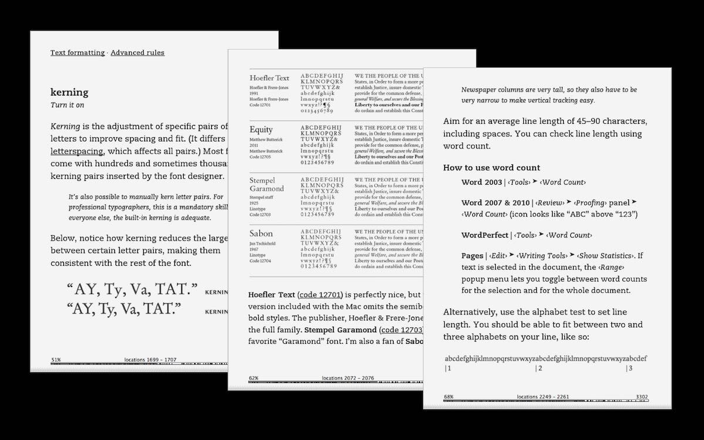
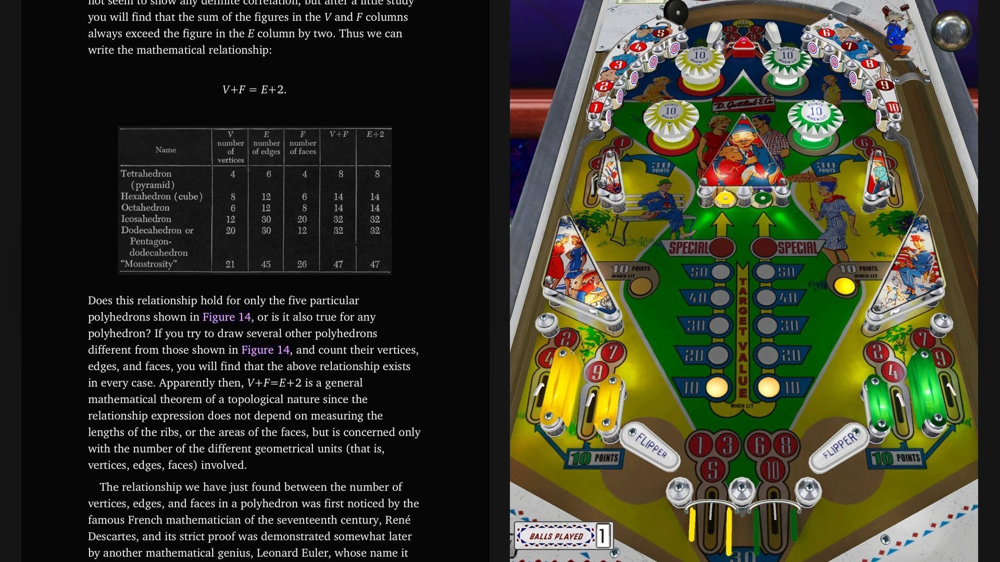

When I started Practical Typography, my key question was this: how could I adapt the material from my paperback Typography for Lawyers into a digital version, while keeping it a peaceful, book-like reading experience?
At the time, my most recent adventure in e-books had been unsatisfying. When I released the first edition of Typography for Lawyers, readers begged for a Kindle version. So I made one. It was awful. Because the Kindle is awful. From Amazon’s perspective, this is probably a feature. From mine, it was a bug. Why do we need a typographically ruinous version of a book making the case for good typography? When the time came to make a second edition, I pulled the plug.

It seemed to me then—and even more so today, now that makers of e-book readers have had years to make improvements—that these devices prioritized convenience over all else. I predict they’ll never have the typographic capabilities or standards of print publishing.
I don’t mean that as a put-down. In publishing, convenience sometimes should win, and does win. In The Billionaire’s Typewriter, I reflect on how the original manual typewriter offered writers convenience at the cost of typographic freedom. Compared to the productivity of pencil and paper, it was a worthy trade-off.
Still, at the time, I was dispirited. Wealthy tech companies were taking over the book market in a manner that made convenience the #1 consideration. Tied for last place: everything else.
For instance, had it been worth Apple’s time to provide nice e-book developer tools for the iPad, those tools would’ve existed. Instead, Apple provided developer tools for making flashy games, because these were more likely to sell iPads. In turn, it’s no surprise that these games have taken over the iPad economy.

Either I had to give up on the idea of a well designed e-book. Or find a way around the roadblock.
True, PDF supports a lot of typographic & design flexibility. But PDF is a paper simulator. It’s great for making digital versions of works originally designed for print. For natively digital works, it imposes unnecessary complexity and limitations.
For a longer answer, see why there’s no e-book or PDF.
Having eliminated the other options, I started thinking about publishing Practical Typography on the web.
In principle, I wasn’t opposed. After all, Typography for Lawyers itself had started in 2008 as a web-based book, which is what led to the paperback deal. I had made that version in WordPress. WordPress made basic publishing tasks easy, but ambitious layouts remained difficult.
By the time I was thinking about Practical Typography, there had been valuable developments in web design—most notably browser support for webfonts. It occurred to me that what I wanted was not a simple but regimented system like WordPress—it just wouldn’t let me work with the sophistication and detail I needed. Instead, I wanted a flexible tool for describing complex HTML & CSS layouts with simpler, high-level notation.
In short: I wanted my own programming language.
Inventing a language to solve a problem is an established technique called language-oriented programming. The language that results is sometimes known as a domain-specific language (or DSL).
I didn’t know this at the time, however. So, in typical fashion, I just blundered into the project with optimism. Let’s see what happens! I designed my notation—which involved programming commands embedded in plain text—and prototyped an interpreter in Python. The language worked—barely. It was reminiscent of the first act of Iron Man, where Tony Stark, trapped in a cave, builds his first flying suit out of toaster parts and car batteries. Not beautiful. But better than the alternative.
My Python skills, however, were not sufficient to get me where I needed to go. That’s when some internet spelunking led me to Racket, a programming language that had a text-based dialect called Scribble. Originally, I’d only intended to use Scribble to add a few features to my language. But as I studied it, I realized that the Racket guys had gone down the path I was traveling, and already sorted out the thorniest problems.
Moreover, I learned that Scribble itself was made possible by Racket’s orientation toward language-oriented programming. Then the light bulb went on: I shouldn’t be using Python at all. I should rewrite the whole project in Racket.
So I did. I named the resulting language Pollen. I used Pollen to make the first version of Practical Typography. I’ve used it nearly every day since, on everything I publish on the web.
The difference between WordPress and Pollen?
WordPress relies on a cloud-based interface—you log into a remote website and make your edits through a web interface. After you click a button, the site is updated.
Pollen, by contrast, adopts the idioms of programming. There is no cloud interface. A website is a collection of source files in a local directory (written in the Pollen language). To refresh the site, you recompile these source files to produce output files. Then you copy these output files to your web server.
If this sounds more complicated, it is, a little. But the benefit of adopting a programming model is that within a Pollen project, I can use programming tools. For instance, I can consolidate complicated formatting tasks into functions that automatically handle them. Whereas in WordPress, I’d have to do these by hand, which in many cases would be impractical. So though the floor is higher, so is the ceiling. With Pollen, I can accomplish things that would otherwise be too expensive.
I’m satisfied with web publishing. The web offers plenty of typographic and layout capability. Certainly more than any e-book format, and on par with PDF.
But to fully harness this capability, I had to create better tools. Writing Pollen wasn’t cheap. But over its first five years, it’s already repaid my investment.
Readers have occasionally asked if I’ll ever publish Practical Typography as a paperback. Early on, I said yes. These days, no. As a reader, I prefer printed books. As a typographer, I miss working on print layouts. Eventually I’ll find other some pretext for making printed things.
But as a self-published writer, I’ve come to prefer the plasticity, immediacy, and reach of the web. At this point, a printed version of Practical Typography strikes me as a dilution of the concept. That is not a result I would’ve predicted when I started this project.
Pollen is open-source software and can be downloaded and used by anyone.
My other online book, Beautiful Racket, teaches language-oriented programming using Racket.
PDF and print typesetting is the topic of my next software project, the slowly gestating Quad.